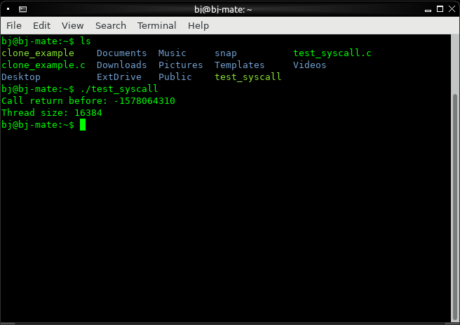
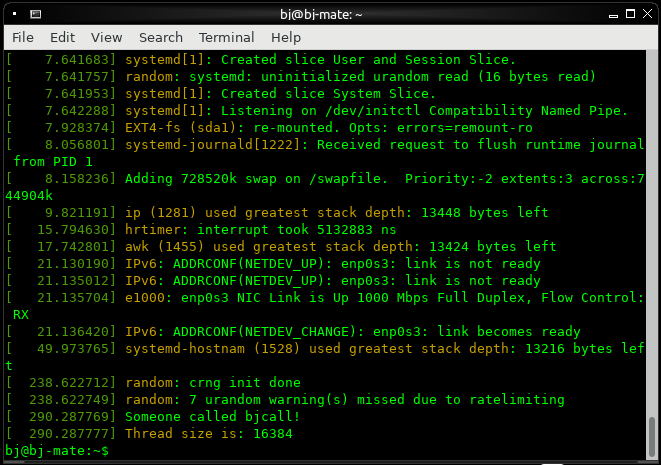

Also described in the log, I implemented a system call following a mix of the textbook's information (in chapter 5), and the information found here. It prints out the default thread size on the system, and doesn't take any function arguments.
First, the system call is assigned a new number, which happened to be 335 for the version of the kernel I was using. This is defined in syscall_64.tbl, which automatically generates the required source files on build.
335 common bjfunc __x64_sys_bjcall
The actual code itself is defined in sys.c, with the function declaration `SYSCALL_DEFINE0(bjcall)` since the function takes no arguments.
#include <asm/page.h>
...
/*
* BJ added dummy sys call test
*
* returns the size of the per-process kernel stack
*/
SYSCALL_DEFINE0(bjcall)
{
printk(KERN_INFO "Someone called bjcall!\n");
printk(KERN_INFO "Thread size is: %ld\n", THREAD_SIZE);
return THREAD_SIZE;
}
To test the code, you can either use the syscall function or call the function via assembly, by setting the register $rax to the number of the function you want to call, with the result stored in $eax
#define _GNU_SOURCE
#include <unistd.h>
#include <sys/syscall.h>
#include <stdio.h>
/* The system call entry number added to the table */
#define SYS_bjfunc 335
int main(int argc, char *argv[])
{
/* syscall(long number, ...) */
int thread_size = syscall(SYS_bjfunc);
printf("Thread size: %d\n", thread_size);
return 0;
}
or
#include <stdio.h>
#define SYS_bjfunc 335
int main(int argc, char *argv[])
{
/* A system call stores the return value in eax according
* to the book */
register int call_return asm("eax");
printf("Call return before: %d\n", call_return);
/* Call the system call via assembly,
* howto from here:
* https://jamesfisher.com/2018/02/19/how-to-syscall-in-c.html */
register int syscall_no asm("rax") = SYS_bjfunc;
asm("syscall");
/* Call return is already linked to $eax so it was
* updated on the above assembly syscall */
printf("Thread size: %d\n", call_return);
return 0;
}
Result of calling the system call:
You can see the `printk`s logged via the `dmesg` command:
